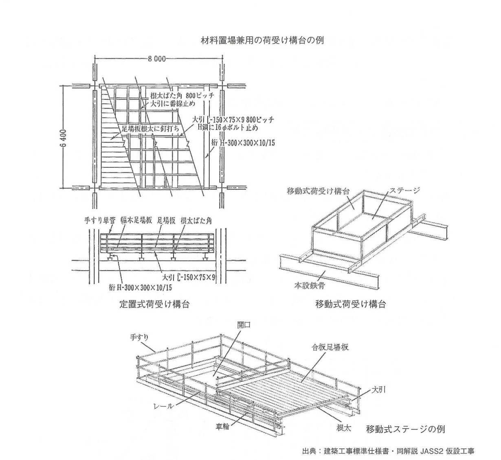
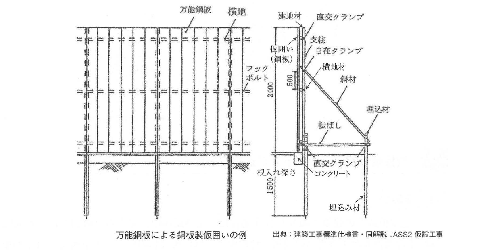
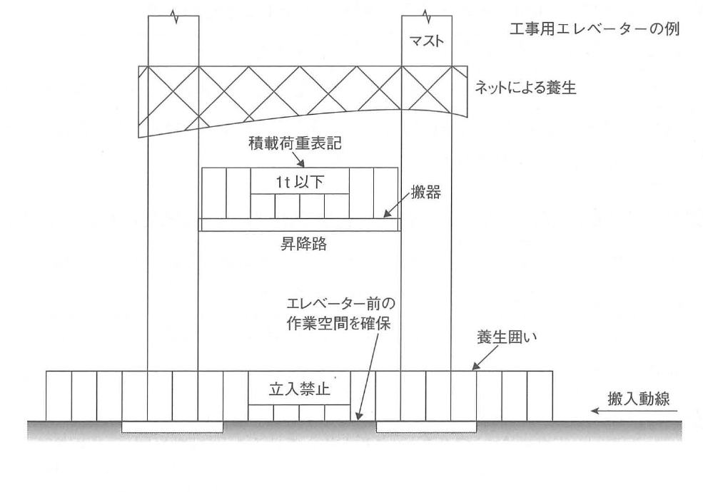

原文
次の設問1から設問3の建築工事における仮設物について、設置計画の作成に当たり検討すべき事項を、それぞれ2つ、留意点とともに具体的に記述しなさい。
ただし、解答はそれぞれ異なる内容の記述とし、申請手続、届出及び運用管理に関する記述は除くものとする。また、使用資機材に不良品はないものとする。
設問1荷受け構台
設問2鋼板製仮囲い（ゲート及び通用口を除く）
設問3工事用エレベーター
次の設問1から設問3の建築工事における仮設物について、設置計画の作成に当たり検討すべき事項を、それぞれ2つ、留意点とともに具体的に記述しなさい。
ただし、解答はそれぞれ異なる内容の記述とし、申請手続、届出及び運用管理に関する記述は除くものとする。また、使用資機材に不良品はないものとする。
Đối với các công trình tạm trong công tác xây dựng nêu tại Câu 1 đến Câu 3, khi lập kế hoạch bố trí, hãy trình bày cụ thể các hạng mục cần xem xét, mỗi loại 2 hạng mục, kèm theo các điểm cần lưu ý.
Tuy nhiên, nội dung trả lời của từng ý phải khác nhau và không được trình bày về thủ tục xin phép, thủ tục thông báo hoặc quản lý trong quá trình vận hành. Ngoài ra, giả định rằng vật tư và thiết bị sử dụng không có sản phẩm lỗi.
① 荷受け構台の設置位置は、材料の取込みや水平運搬がしやすい場所とする。荷受け構台の設置数は、2階～3階ごとに1箇所程度とする。
② 荷受け構台を設置した階での作業完了後に、荷受け構台を別の階に運び出せるよう、階段や動線の配置に留意する。
① 工事現場の地盤面から仮囲いまでの高さを1.8m以上とする。その地盤面が周辺よりも低いときは、この高さは周辺の地盤面から計測する。
② 仮囲いは、工事期間に見合った耐久性があるものとする。この耐久性を考えるときは、強風に対する安全性も考慮する。
① 工事用エレベーターは、資材搬入動線に接して設置する。設置位置の計画では、資材積込み用の作業空間があることを確認する。
② 工事に必要となる積載荷重を満たすことのできる搬器を選定する。搬器の積載荷重は、工事用エレベーターの積込み口に表示する。
① Vị trí sàn tiếp nhận vật liệu phải là nơi dễ tiếp nhận vật liệu và dễ vận chuyển theo phương ngang. Số lượng bố trí là khoảng 1 vị trí cho mỗi 2 đến 3 tầng.
② Sau khi hoàn thành công việc tại tầng đang bố trí sàn, phải lưu ý cầu thang và tuyến di chuyển để có thể chuyển sàn sang tầng khác.
① Chiều cao hàng rào tạm tính từ mặt đất công trường phải từ 1,8 m trở lên. Khi mặt đất công trường thấp hơn khu vực xung quanh, phải đo từ mặt đất khu vực xung quanh.
② Hàng rào tạm phải có độ bền phù hợp với thời gian thi công, đồng thời phải xem xét mức độ an toàn đối với gió mạnh.
① Vị trí thang máy công trường phải tiếp giáp với tuyến đưa vật liệu vào. Đồng thời phải xác nhận có không gian thao tác để chất vật liệu.
② Phải lựa chọn cabin hoặc bàn vận chuyển đáp ứng tải trọng chất tải cần thiết cho công trình và hiển thị tải trọng của cabin tại cửa chất hàng.
建築工事標準仕様書・同解説 JASS2 仮設工事.
荷受け構台とは、資材を搬入したり、廃棄物を排出したりするために設けられる仮設の作業構台である。
作業構台とは、仮設の支柱および作業床等により構成され、材料・仮設機材の集積や、建設機械等の設置・移動を目的とする高さが2m以上の設備である。
Sàn tiếp nhận vật liệu là sàn công tác tạm được bố trí để đưa vật liệu vào hoặc đưa phế thải ra khỏi công trình.
Sàn công tác kết cấu tạm được cấu thành bởi cột chống tạm, sàn công tác và các bộ phận tương tự; dùng để tập kết vật liệu, thiết bị tạm hoặc để bố trí, di chuyển máy móc xây dựng; có chiều cao từ 2 m trở lên.
荷受け構台の設置位置を定めるときは、次のような点に留意する必要がある。
① 設置位置は、材料の取込みや水平運搬がしやすい場所とする。
② 設置割合は、2階～3階ごとに1箇所とする。
③ 設置階での作業完了後に、別の階に運び出せるよう、階段や動線の配置を考慮する。
Khi xác định vị trí của sàn tiếp nhận vật liệu, cần lưu ý các điểm sau.
① Vị trí bố trí phải là nơi thuận lợi cho việc tiếp nhận vật liệu và vận chuyển theo phương ngang.
② Tỷ lệ bố trí là 1 vị trí cho mỗi 2 đến 3 tầng.
③ Sau khi hoàn thành công việc tại tầng đang bố trí sàn, phải xem xét cầu thang và tuyến di chuyển để có thể chuyển sàn sang tầng khác.
荷受け構台の設置計画では、次のような点についても留意する必要がある。ただし、これらの内容は問題文中の「運用管理に関する記述は除く」に抵触するおそれがあるので、解答として記述することは適切でないことに注意が必要である。
① 荷受け構台の作業床の最大積載荷重を定める。この最大積載荷重は、労働者に周知させる。
② 荷受け構台には、労働者の墜落を防止するための手すりと、材料の落下を防止するための幅木を設ける。
③ 多量の資材が構台上に集積され続けるような事態を避けられる計画とする。
Trong kế hoạch bố trí sàn tiếp nhận vật liệu cũng cần lưu ý các nội dung sau. Tuy nhiên, các nội dung này có thể rơi vào phần bị đề bài loại trừ là “quản lý trong quá trình vận hành”, vì vậy cần chú ý rằng không phù hợp để sử dụng làm đáp án của câu hỏi này.
① Xác định tải trọng chất tải lớn nhất của sàn công tác và phổ biến tải trọng này cho người lao động.
② Bố trí lan can để ngăn người lao động rơi ngã và tấm chắn chân để ngăn vật liệu rơi xuống.
③ Lập kế hoạch tránh tình trạng lượng lớn vật liệu liên tục bị tập kết trên sàn.
Hình thể hiện các ví dụ về sàn tiếp nhận vật liệu đồng thời dùng làm nơi tập kết vật liệu, gồm loại cố định, loại di động và sàn di động.

Đường truyền tải chính của loại cố định được đọc theo thứ tự: ván sàn → 根太 → 大引 → 桁 → kết cấu chịu lực. Loại di động bổ sung ray và bánh xe để dịch chuyển sàn.
一定規模以上の建築工事等を行う場合は、工事期間中、工事現場の周囲にその地盤面（その地盤面が工事現場の周辺の地盤面より低い場合においては工事現場の周辺の地盤面）からの高さが1.8m以上の板塀その他これに類する仮囲いを設けることが定められている。
Khi thực hiện công trình xây dựng từ một quy mô nhất định trở lên, trong suốt thời gian thi công phải bố trí hàng rào tạm bằng ván hoặc loại tương đương quanh công trường, có chiều cao từ 1,8 m trở lên.
Khi mặt đất công trường thấp hơn mặt đất khu vực xung quanh, phải đo chiều cao từ mặt đất khu vực xung quanh công trường.
鋼板製仮囲いを設置するときは、次のような点に留意する必要がある。ただし、下記の②については問題文中の「申請手続・届出に関する記述は除く」に抵触するので、これを解答としてはならない。
① 道路を通行する自動車の視界に悪影響を及ぼさないよう、道路のコーナー部分に設ける仮囲いは、十分な隅切りを行う。安全上それができないときは、透明材料による仮囲いを設ける。
② 仮囲いが道路を占用するときは、道路管理者から道路占用許可を受ける。
Khi bố trí hàng rào tạm bằng tấm thép, cần lưu ý các điểm sau. Tuy nhiên, mục ② thuộc nội dung bị đề bài loại trừ là thủ tục xin phép hoặc thông báo, vì vậy không được dùng mục này làm đáp án.
① Để không gây ảnh hưởng xấu đến tầm nhìn của xe ô tô lưu thông trên đường, hàng rào tạm tại góc đường phải được tạo khoảng vát hoặc khoảng lùi góc đầy đủ. Khi không thể thực hiện vì lý do an toàn, phải sử dụng hàng rào bằng vật liệu trong suốt.
② Khi hàng rào tạm chiếm dụng phần đường, phải xin giấy phép chiếm dụng đường từ cơ quan quản lý đường bộ.
鋼板製仮囲いを設置するときは、強風や大雨に対する対策として、次のような点に留意する必要がある。
① 仮囲いは、工事期間に見合った耐久性があるものとする。この耐久性を考えるときは、強風に対する安全性も考慮する。
② 強風で仮囲いが崩壊することを防ぐため、建地材・横地材の配置間隔を適切なものとする。必要があれば、仮囲いの一部をメッシュ枠として風通しを良くする。
③ 工事現場から降雨が流れだしたり、工事現場に降雨が流れ込んだりしないようにするため、仮囲いの下端部に隙間ができないようにする。仮囲いの下端部には、幅木を取り付けるか、コンクリートで埋めて土手を造る。
Khi bố trí hàng rào tạm bằng tấm thép, cần lưu ý các nội dung sau như biện pháp ứng phó với gió mạnh và mưa lớn.
① Hàng rào phải có độ bền phù hợp với thời gian thi công và phải xem xét mức độ an toàn đối với gió mạnh.
② Để ngăn sụp đổ do gió mạnh, phải bố trí khoảng cách thích hợp giữa cấu kiện đứng và cấu kiện ngang. Khi cần, dùng một phần hàng rào dạng khung lưới để tăng khả năng thông gió.
③ Để ngăn nước mưa chảy ra khỏi hoặc chảy vào công trường, phải không để xuất hiện khe hở tại mép dưới hàng rào. Tại mép dưới, lắp tấm chắn chân hoặc bịt bằng bê tông để tạo gờ chắn nước.
Hình thể hiện ví dụ hàng rào tạm bằng tấm thép đa năng.

Tải gió tác dụng lên tấm thép được truyền qua 横地材 → 建地材・支柱 → 斜材・転ばし → 埋込み材. Vì vậy, khoảng cách khung, liên kết cùm và hệ neo là các yếu tố quyết định ổn định của hàng rào.
工事用エレベーターとは、土木・建築等の工事の作業に使用するエレベーター（揚重運搬機械）である。
また、工事用エレベーターのうち、搬器として長さが3m以上の荷台を使用し、定格速度が0.17m／秒以下のものは、ロングスパン工事用エレベーターと呼ばれている。
Thang máy công trường là thang máy dùng cho công tác xây dựng dân dụng, xây dựng công trình và các công việc tương tự, tức một loại máy nâng vận chuyển.
Trong các loại thang máy công trường, loại có chiều dài bàn vận chuyển từ 3 m trở lên và tốc độ định mức không quá 0,17 m/s được gọi là thang máy công trường loại long-span.
工事用エレベーターを設置するときは、次のような点に留意する必要がある。
① 工事用エレベーターは、資材搬入動線に接して（エレベーターの到着階から容易に資材を移動できるように）設置する。
② 工事用エレベーターの前に、資材積込み用の作業空間があることを確認する。
③ 工事用エレベーターの組立作業場所の周辺および開口部は、ネットなどで養生する。
④ 作業員や長尺資材が昇降路に入らないよう、養生囲いを設ける。
⑤ 工事に必要となる積載荷重を満たすことのできる搬器を選定する。
⑥ 搬器の積載荷重は、工事用エレベーターの積込み口に表示する。
⑦ 工事用エレベーターの駆動方式は、安全性が高く簡便なラックピニオン駆動方式とする。
⑧ 工事用エレベーターの定格速度に留意し、定格速度が0.75m／秒を超える場合は、次第ぎき非常止め装置を設けることを検討する。
Khi bố trí thang máy công trường, cần lưu ý các điểm sau.
① Vị trí lắp đặt phải tiếp giáp với tuyến đưa vật liệu vào và cho phép dễ dàng chuyển vật liệu từ tầng thang dừng đến.
② Phải xác nhận phía trước thang có không gian thao tác để chất vật liệu.
③ Khu vực xung quanh nơi lắp ráp và các lỗ mở phải được che chắn bằng lưới hoặc biện pháp tương đương.
④ Để công nhân và vật liệu dài không lọt vào giếng thang, phải bố trí hàng rào bảo vệ tạm.
⑤ Lựa chọn cabin hoặc bàn vận chuyển đáp ứng tải trọng chất tải cần thiết cho công trình.
⑥ Tải trọng chất tải của cabin phải được hiển thị tại cửa chất hàng của thang máy công trường.
⑦ Hệ truyền động sử dụng cơ cấu thanh răng - bánh răng, có tính an toàn cao và cấu tạo đơn giản.
⑧ Khi tốc độ định mức vượt quá 0,75 m/s, cần xem xét bố trí thiết bị hãm an toàn khẩn cấp kiểu tác động dần.
工事用エレベーターの構造規格は、次のように定められている。これを解答とすることもできるが、細かい事項なので、上記の（2）のいずれかを解答とする方が望ましいと思われる。
① 昇降路の出入口の床先と搬器の出入口の床先との間隔は、4cm以下とする。
② 昇降路の壁と搬器の出入口の床先との間隔は、12.5cm以下とする。
Tiêu chuẩn kết cấu của thang máy công trường được quy định như sau. Các nội dung này cũng có thể dùng làm đáp án, nhưng vì tương đối chi tiết nên sách cho rằng nên ưu tiên chọn một nội dung tại mục (2).
① Khoảng cách giữa mép sàn tại cửa giếng thang và mép sàn tại cửa cabin phải không quá 4 cm.
② Khoảng cách giữa tường giếng thang và mép sàn tại cửa cabin phải không quá 12,5 cm.
Hình thể hiện ví dụ bố trí thang máy công trường.

Quan hệ bố trí chính là 搬入動線 → không gian thao tác phía trước → 搬器 → 昇降路. Vùng xung quanh được tách bằng hàng rào và biển cấm vào để tránh người hoặc vật liệu dài xâm nhập giếng thang.
| 日本語 | 読み方 | Tiếng Việt | Giải thích | Liên quan |
|---|---|---|---|---|
| 仮設物 | かせつぶつ | Công trình/cấu kiện tạm | Hạng mục bố trí để phục vụ thi công và không phải bộ phận hoàn thiện vĩnh viễn. | 仮囲い, 荷受け構台 |
| 荷受け構台 | にうけこうだい | Sàn tiếp nhận vật liệu | Sàn tạm dùng để tiếp nhận vật liệu hoặc đưa phế thải ra khỏi công trình. | 作業構台, 水平運搬 |
| 作業構台 | さぎょうこうだい | Sàn công tác kết cấu tạm | Kết cấu tạm gồm cột chống và sàn, dùng tập kết vật liệu hoặc bố trí, di chuyển máy móc. | 作業床 |
| 作業床 | さぎょうゆか | Sàn công tác | Mặt sàn nơi người lao động thao tác. | 手すり, 幅木 |
| 水平運搬 | すいへいうんぱん | Vận chuyển ngang | Vận chuyển vật liệu theo phương ngang sau khi vật liệu được nâng đến tầng. | 資材搬入動線 |
| 動線 | どうせん | Tuyến di chuyển | Tuyến lưu thông của người, vật liệu hoặc thiết bị trong công trường. | 搬入動線 |
| 最大積載荷重 | さいだいせきさいかじゅう | Tải trọng chất tải lớn nhất | Giới hạn tải trọng tối đa được đặt lên sàn hoặc thiết bị. | 積載荷重 |
| 手すり | てすり | Lan can | Bộ phận bảo vệ chống rơi ngã tại mép sàn. | 幅木 |
| 幅木 | はばき | Tấm chắn chân/gờ chân | Tại sàn công tác, dùng ngăn vật liệu rơi; tại chân hàng rào, dùng bịt kín mép dưới. | 手すり, 仮囲い |
| 定置式荷受け構台 | ていちしきにうけこうだい | Sàn tiếp nhận loại cố định | Sàn tiếp nhận được cố định tại một vị trí. | 移動式荷受け構台 |
| 移動式荷受け構台 | いどうしきにうけこうだい | Sàn tiếp nhận loại di động | Sàn có cấu tạo cho phép di chuyển. | 移動式ステージ |
| 根太 | ねだ | Joist/thanh đỡ sàn | Thanh đỡ trực tiếp ván sàn và truyền tải xuống 大引. | 大引 |
| 大引 | おおびき | Dầm phụ đỡ joist | Cấu kiện đỡ hệ 根太 và truyền tải xuống 桁. | 根太, 桁 |
| 桁 | けた | Dầm chính | Cấu kiện nhận tải từ hệ dầm phụ và sàn. | 大引 |
| 番線 | ばんせん | Dây thép buộc | Dây thép dùng để buộc, cố định tạm các cấu kiện. | 荷受け構台 |
| 仮囲い | かりがこい | Hàng rào tạm | Hàng rào bao quanh công trường trong thời gian thi công. | 鋼板製仮囲い |
| 鋼板製仮囲い | こうはんせいかりがこい | Hàng rào tạm bằng tấm thép | Loại hàng rào tạm dùng tấm thép làm bề mặt bao che. | 万能鋼板 |
| 隅切り | すみきり | Vát góc/tạo khoảng lùi góc | Xử lý góc đường để cải thiện tầm nhìn của phương tiện. | 透明材料 |
| 道路占用許可 | どうろせんようきょか | Giấy phép chiếm dụng đường | Giấy phép khi chiếm dụng không gian thuộc phạm vi đường. | 申請手続 |
| 建地材 | たてじざい | Cấu kiện đứng | Thành phần đứng của khung đỡ hàng rào tạm. | 横地材 |
| 横地材 | よこじざい | Cấu kiện ngang | Thành phần ngang liên kết hệ đứng của hàng rào. | 建地材 |
| メッシュ枠 | メッシュわく | Khung lưới | Bộ phận lưới làm giảm diện tích cản gió và tăng thông gió. | 強風対策 |
| 直交クランプ | ちょっこうクランプ | Cùm vuông góc | Phụ kiện liên kết hai ống hoặc cấu kiện theo phương vuông góc. | 自在クランプ |
| 自在クランプ | じざいクランプ | Cùm xoay | Phụ kiện liên kết cho phép tạo góc thay đổi. | 直交クランプ |
| 工事用エレベーター | こうじようエレベーター | Thang máy công trường | Thiết bị nâng vận chuyển dùng cho công tác xây dựng. | 揚重運搬機械 |
| 揚重運搬機械 | ようじゅううんぱんきかい | Máy nâng vận chuyển | Thiết bị dùng để nâng và vận chuyển vật liệu, hàng hóa. | 工事用エレベーター |
| 搬器 | はんき | Cabin/bàn vận chuyển | Bộ phận trực tiếp mang tải và chuyển động trong thang. | 昇降路 |
| 昇降路 | しょうこうろ | Giếng thang/đường chạy thang | Không gian mà 搬器 chuyển động lên xuống. | 搬器 |
| 養生囲い | ようじょうがこい | Hàng rào bảo vệ tạm | Bao che tạm ngăn người hoặc vật liệu xâm nhập khu vực nguy hiểm. | 昇降路 |
| ラックピニオン駆動方式 | ラックピニオンくどうほうしき | Truyền động thanh răng - bánh răng | Bánh răng nhỏ ăn khớp với thanh răng để tạo chuyển động lên xuống. | 駆動方式 |
| 次第ぎき非常止め装置 | しだいぎきひじょうどめそうち | Thiết bị hãm an toàn khẩn cấp tác động dần | Thiết bị dừng cabin theo cơ chế hãm dần khi xảy ra điều kiện bất thường. | 定格速度 |
| 床先 | ゆかさき | Mép sàn | Mép ngoài của sàn tại vị trí cửa giếng thang hoặc cửa cabin. | 構造規格 |
| 定格速度 | ていかくそくど | Tốc độ định mức | Tốc độ vận hành được quy định cho thiết bị. | ロングスパン, 非常止め装置 |
| ロングスパン工事用エレベーター | ロングスパンこうじようエレベーター | Thang máy công trường long-span | Trong nội dung sách: bàn vận chuyển dài từ 3 m và tốc độ định mức không quá 0,17 m/s. | 工事用エレベーター |
Đề bài loại trừ 申請手続・届出・運用管理. Vì vậy, các nội dung như xin 道路占用許可 hoặc phổ biến tải trọng tối đa có thể đúng về kỹ thuật và quản lý, nhưng không phù hợp làm đáp án khi rơi vào phạm vi bị loại trừ.
Đối với loại cố định, tải từ vật liệu được truyền theo chuỗi: 足場板 → 根太 → 大引 → 桁 → kết cấu chịu lực. Việc cố định ván sàn, bố trí bước dầm và liên kết vào thép H nhằm giữ ổn định cho đường truyền tải này.
Tấm thép tạo diện tích cản gió lớn. Tải gió được truyền vào cấu kiện ngang, cấu kiện đứng, hệ giằng và phần neo. Khung lưới làm tăng thông gió; bịt kín chân hàng rào bằng tấm chắn hoặc bê tông nhằm kiểm soát dòng nước mưa.
Trong cơ cấu ラックピニオン, bánh răng nhỏ ăn khớp với thanh răng để tạo chuyển động lên xuống. Về mặt bố trí, cần xem xét đồng thời tuyến vận chuyển vật liệu, không gian thao tác phía trước, cabin, giếng thang và vùng ngăn tiếp cận.
| Đối tượng/parameter | Giá trị hoặc điều kiện | Ý nghĩa |
|---|---|---|
| Số hạng mục phải trả lời | Mỗi loại 2 hạng mục | Ba loại công trình tạm, nội dung từng đáp án phải khác nhau. |
| 作業構台の高さ | 2 m以上 | Điều kiện trong định nghĩa sàn công tác kết cấu tạm. |
| 荷受け構台の設置割合 | 2～3階ごとに1箇所 | Tỷ lệ bố trí sàn tiếp nhận vật liệu. |
| 仮囲いの高さ | 1.8 m以上 | Nếu nền công trường thấp hơn xung quanh, đo từ nền khu vực xung quanh. |
| ロングスパンの荷台長さ | 3 m以上 | Một điều kiện nhận diện thang máy công trường long-span. |
| ロングスパンの定格速度 | 0.17 m/s以下 | Điều kiện còn lại trong định nghĩa long-span. |
| 次第ぎき非常止め装置の検討条件 | 定格速度が0.75 m/sを超える | Ngưỡng xem xét bố trí thiết bị hãm an toàn tác động dần. |
| 床先 ↔ 床先 | 4 cm以下 | Mép sàn cửa giếng thang đến mép sàn cửa cabin. |
| 昇降路の壁 ↔ 搬器の床先 | 12.5 cm以下 | Tường giếng thang đến mép sàn cửa cabin. |
Không dùng thủ tục xin phép, thông báo hoặc quản lý vận hành làm đáp án. Ví dụ điển hình là 道路占用許可.
0,17 m/s trở xuống là điều kiện định nghĩa ロングスパン工事用エレベーター; vượt quá 0,75 m/s là điều kiện xem xét 次第ぎき非常止め装置.
Góc đường → tầm nhìn → 隅切り; không thể thực hiện → vật liệu trong suốt.
Gió mạnh → khoảng cách 建地材・横地材 + khung lưới.
Mưa → không để hở chân hàng rào → 幅木 hoặc bê tông tạo gờ.
| {{HEADER_1}} | {{HEADER_2}} |
|---|---|
| {{ROW_KEY}} | {{ROW_RELATION}} |
{{NOTE_CONTENT}}
{{WARNING_CONTENT}}
{{MEMORY_ITEM}}